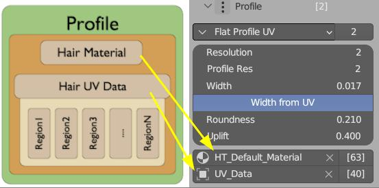
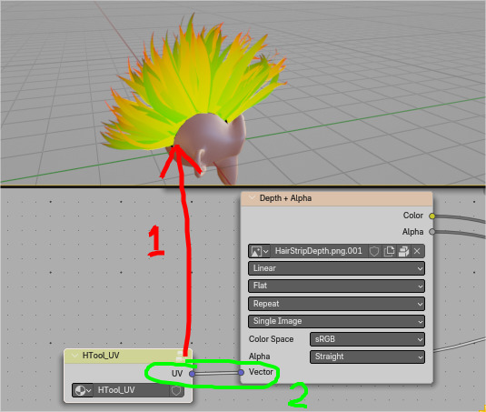
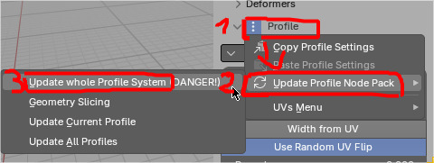

FAQ¶
I get error when enabling add-on¶
There are different causes for this, but usually one of below solutions fixes the issue:
-
Try Restarting Blender
- sometimes it is all it takes
-
Make sure you are up-to-date
-
I need to use old Blender
- For Blender 4.2+ - use Hair Tool 4.x + 'HairLibrary_4.x_date.zip'
- For Blender 3.6-4.1 - use Hair Tool 3.x, and HairLibrary_3.x_date.zip
- For Blender 3.3-3.6 - use Hair Tool. 2.46 (last version that supports 'old' curves), and HairLib_18_12_2022.zip
-
Remove Old hair_tool folder
- sometimes old files from previous Hair Tool version may give trouble after update, if they are not removed (auto-updater deals with this automatically)
- Hair Tool folder is placed in your addons directory
- remove hair_tool folder from your ./addons/ directory
- restart Blender
- install Hair Tool again from zip file - this usually fixes installation problems
-
Conflict with another add-ons
- If it still won't work, it is not often, but there may be conflict with another addon, or your blender setup may be corrupted.
- Try this: Restart Blender > then use File menu -> Defaults -> Load Factory Settings -> enable Hair Tool now. If Hair Tool works now, then it means, that your old config was corrupted, or there was conflict with another addon
- If above helped, then you may need to set up your blender config from scratch.
Texture looks wrong¶
-
Check if your hair material and
UV_Dataobject are assigned correctly inside Profile section.  Profile is place where material is assigned to hair strands., and hair UV shape (boxes) is stored If yourUV_Dataobject is missing, you can create it by using Hair UV operator (or copy it from another object profile) -
Even if your UVs from (1) are assigned ok, you should check theirs shape in UV/Image Editor. Run Hair UV operator, and you should see UV Boxes/Regions similar this:
 Example of default hair UVs - made from five UV Regions (boxes)
Example of default hair UVs - made from five UV Regions (boxes) -
In your hair material: make sure that hair UVs are properly read from
HTool_UVnode and make sure that your image node is connected to it.  WhenHTOOL_UVis linked to material output, it should have green+red tint -
Using
Define UVwill generate 'UV_Data` (and assign it to profile), but it will not assign individual UV boxes (regions) to hair strands. For that you will need for that use UV Regions Distribute deformer (for procedural strands) or Set UV Regions operator (for 'real' strands). -
Sometimes UVs may not be generated correctly, if Profile node is out of date. Update it using 'Update Whole Profile' button from image below:

Greyed out parameters panel¶
 Go to Preferences > System > Enable 'Global Undo'. You may need to restart blender after saving settings. It looks like blender bug, and from time to time this option is disabled for no reason.
Go to Preferences > System > Enable 'Global Undo'. You may need to restart blender after saving settings. It looks like blender bug, and from time to time this option is disabled for no reason.
How do I export hair?¶
Hair generated in Hair Tool can be exported just like any other mesh (File > Export > FBX). Just make sure to Convert Curves to Mesh hair first.
How do I export hair texture?¶
If you are using default Hair Tool hair material, then it is using just one texture - alpha mask. You can export it from UV Editor (or Image Editor) > Image menu > Save as:

Note: Build-in HTool hair shader has complicated shader nodes setup, that allows them to look nice in Eevee. It is impossible to copy it to another game engines.
If you want to create more complicated setup, with multiple texture types, you should use Hair Baking scene, where you can set up you hair and bake them as images to target directory.
How do I animate Hair?¶
There is no one way to animate hair, but usually I recommend using simple softbody mesh as deformer for actual hair like it is shown in video below:
There is now built-in option to animate hair using Jiggle Bones see Animation
Error when using Curves from Grid surface¶
Make sure your source grid surface has proper topology.
Examples of bad topology:

Note: First mesh is bad, because it has no subdivision. The last torus does not have any border edge that could be used as marker for roots of hair.
Examples of proper topology:

Note: Torus is ok, as long as you break one of loops, to create border edge.
How to assign UV to selected strand?¶
For selected strands you can use Set UV region
How do I change hair texture?¶
To change hair texture you first need to identify which material Hair Profile is using.
by default hair will receive material named HT_Defautl_Material
- Identify profile material, and open it in Shader editor (see yellow boxes below)
- Find texture node and change the hair texture, to any other image you want
 Remember to connect Vector input of texture node, to
Remember to connect Vector input of texture node, to HTool_UV node - or texture won't be mapped correctly
Note: HTool default texture uses: RGB channels for depth pass, A channel for opacity. If you want to use different texture, make sure it has similar channels setup (or use two - depth and opacity - textures).
Note: If your texture layout is different, you may need to adjust UVs of Hair System. You can do it in UV Image Editor, by pressing
Hair UVbutton see - Defining Hair UVs.
How do I change hair modeling tool hotkeys¶
Go to Edit menu → Preferences → Hotkeys and navigate to hair modeling category: